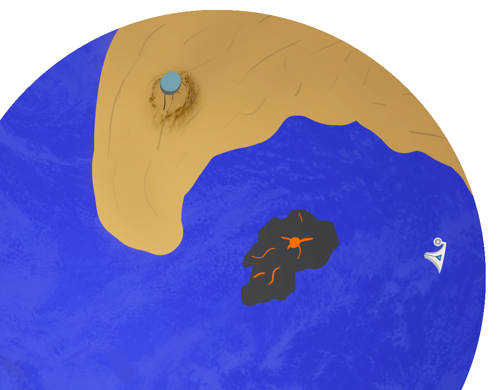
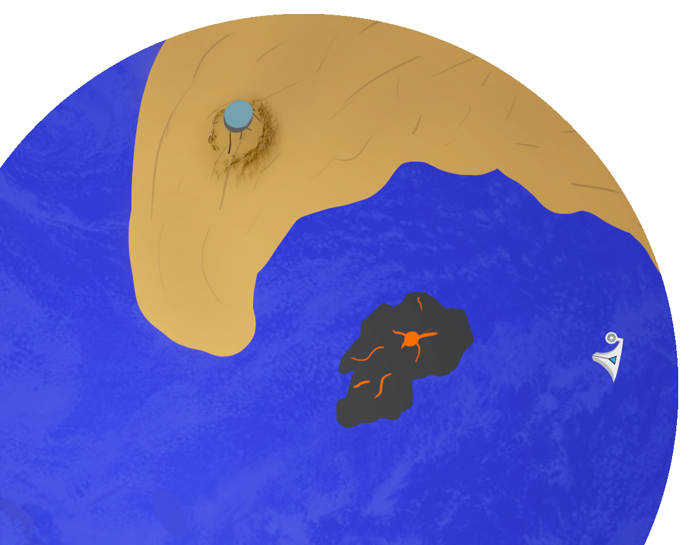
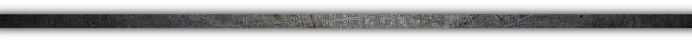
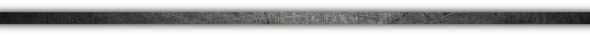

 

Ce site est conçu pour fonctionner en orientation portrait. Pour une expérience optimale le mode plein écran est recommandé (f11).
Autrefois fertile, la planète Sevale est aujourd'hui devenue difficile à vivre, forçant ses habitants à se regrouper en grandes colonies pour survivre. Plus nombreuses autrefois, seule 4 perdurent encore, dépendantes les unes des autres pour leurs ressources.
Dans le cratère de Remeton, la colonie qui autrefois vivait à l'abri de ses murailles les a aujourd'hui dépassées, vivant protégée des séismes et du climat, leur permettant de produire la majorité de la nourriture de la planète.
Colonie la plus confortable de toutes, elle est aussi la plus indépendante. Grâce à l'océan immense de Sevale, la colonie de Tissandel navigue autours du globe pour profiter d'un climat agréable toute l'annéee et produire la majorité de l'éléctricité de la planète en plus de quelques mets rares, pêchés au cours de l'année.
Ce commerce fait de Tissandel la colonie la plus opulante de toutes, ses habitants profitent d'un train de vie plus confortable que les autres. Il est rare que la colonie accueille des membres venus d'ailleurs, l'accès à leur confort est un privilège qu'ils gardent jalousement.
Sur l'île volcanique de Lympix, la Forge et ses artisants forment une colonie à la vie dure, mais sans laquelle les autres ne seraient rien. Les artisants s'occupent de la maintenance et des réparations des autres colonies, fournissant matières premières et savoir-faire contre leur nourriture et énergie.
Entretenue par les autres colonies, celle de Sanalu est le gage pour les habitants de Sevale d'un futur plus vert. Faisant déja rêver les peuples ancestraux, la lune orange est maintenant le centre de la recherche spatiale et scientifique. L'objectif ? Retrouver dans l'espace une planète plus hospitalière où déménager.